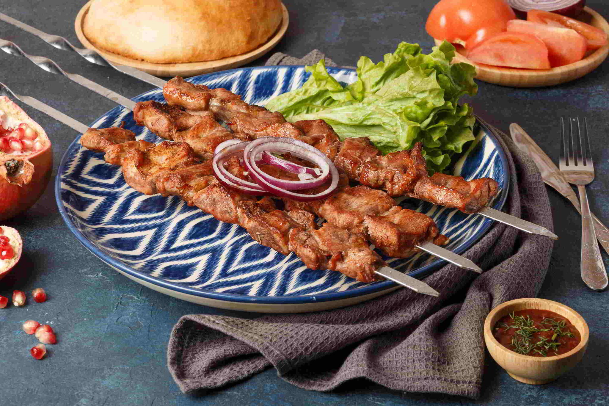
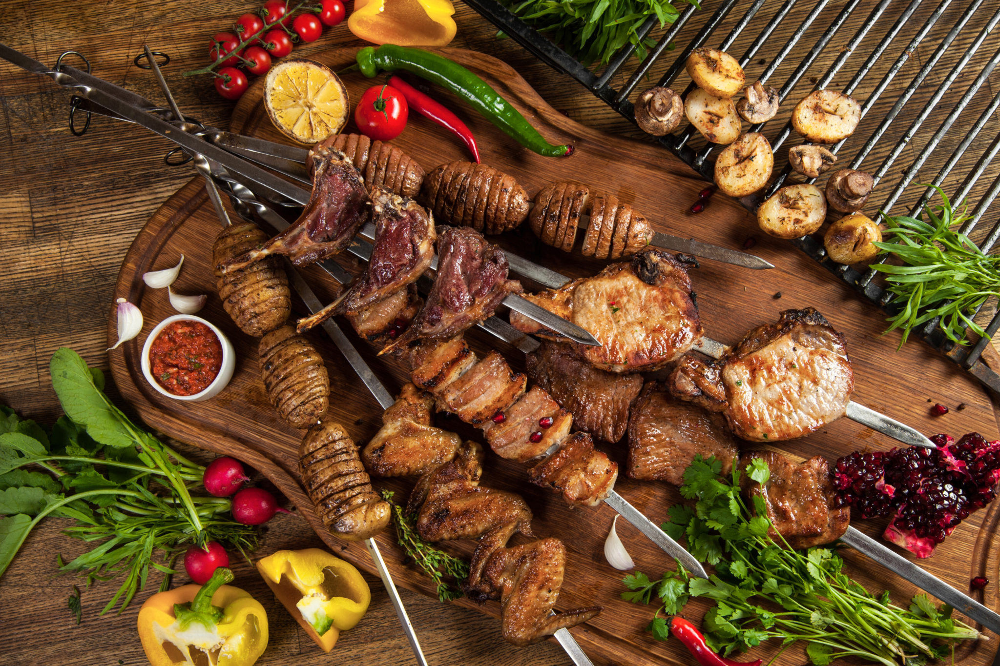

Мясное блюдо, распространенное почти у всех горных и пастушеских народов: куски мяса, преимущественно вырезки или поясничной (почечной) части, нанизанные на вертел и обжаренные над углями или в грилях в течение 10—15 минут.
 Для шашлыка берут мясо упитанного молодого животного, обычно барашка, нарезая куски так, чтобы они были вместе с жиром, и располагают их на вертеле или решетке (гратаре) таким образом, чтобы жировая часть была сверху и жир при гриллировании шашлыка все время стекал бы на мясо. Если мясо не имеет собственного жира, то можно перед гриллированием обмакнуть каждый кусок в подсолнечное или иное растительное масло. Расположение сала между кусками мяса, обычно встречающееся в общепитовской практике, является чисто механическим, декоративным приемом и дает отрицательный эффект: жир мимо мяса стекает на угли и вызывает чад, придающий всему кушанью неприятный запах, огрубляющий его. Иногда для шашлыка применяют заранее приготовленное маринованное мясо, так называемую бастурму, что практикуется только тогда, когда на шашлык берут мясо старого животного или вместо баранины используют говядину.